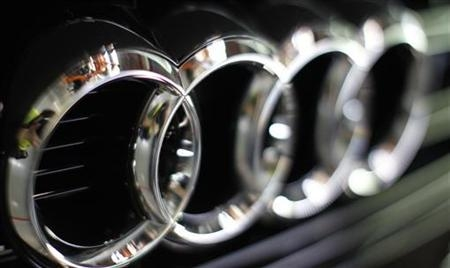
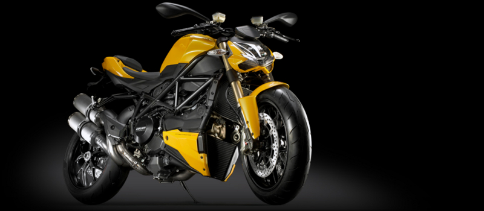

独アウディ、18日にも伊ドゥカティ買収を発表へ＝関係筋
公開日：

［フランクフルト／ミラノ １１日 ロイター］ ２人の関係筋は１１日、独フォルクスワーゲン（ＶＷ）傘下のアウディが、来週にもイタリアの自動二輪（オートバイ）メーカー、ドゥカティ買収を発表する見通しだと明らかにした。実現すれば、長年のライバルであるＢＭＷとのスーパーバイク事業での競争に弾みがつきそうだ。
ちなみにドゥカティは現在、スーパーバイク撤退中でござる。「競争に弾み」がつく前に、まず復帰せねばな！

前々から言われていたので今更驚きはないけれど、「ドイツに……」という気持ちはある。やっぱりイタリアとドイツでは感性が違うと思うし。けれど、デザインは相変わらずボローニャでやるんだろうし。でも、最近は北米市場重視でデザインもアメリカ人受けを狙っているように思うし、AMGとのコラボもやっていたわけだし、一部生産はアジアに移すというし。いまさら「イタリアの……」でもないか。
いい意味でも悪い意味でも、コレがグローバル化ってやつなのかねぇ。